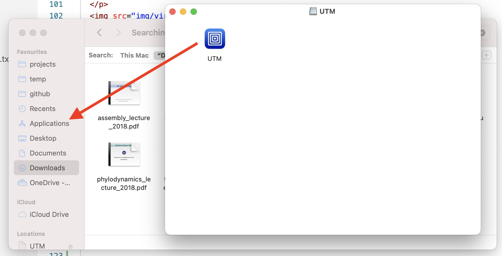
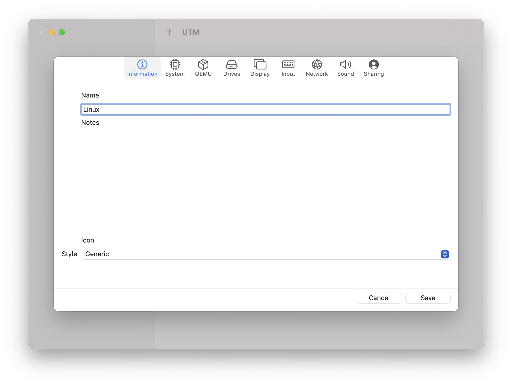
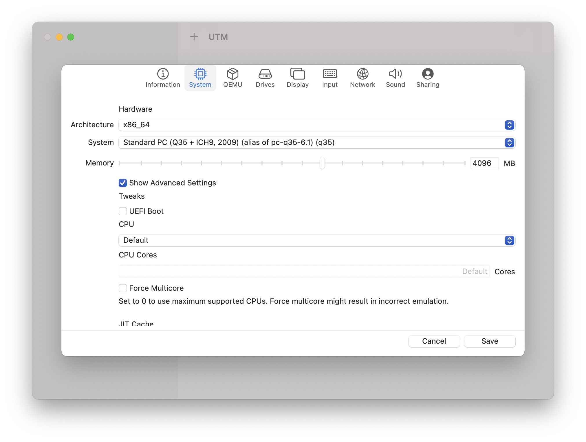
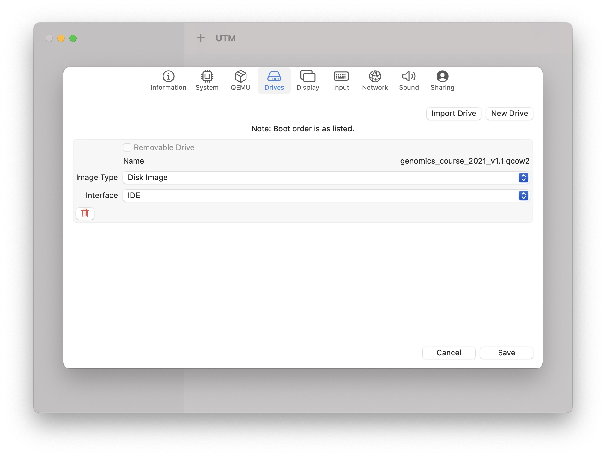
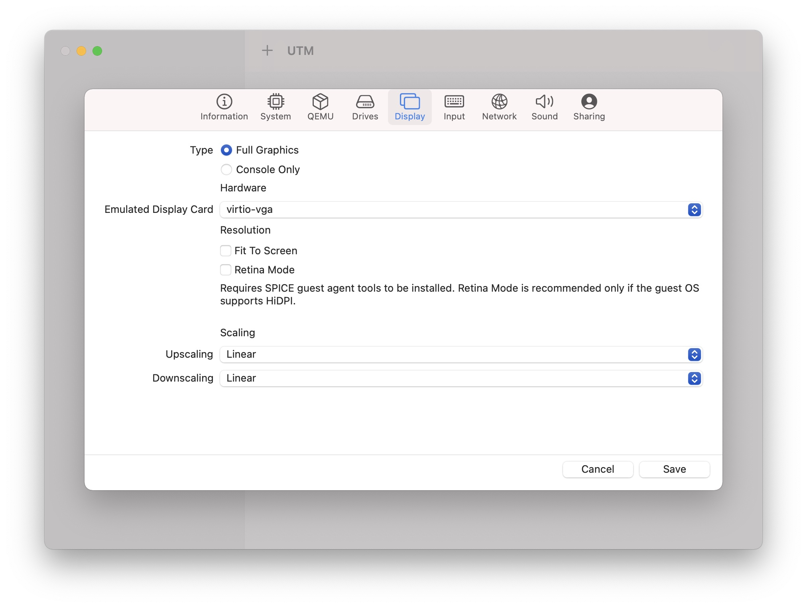
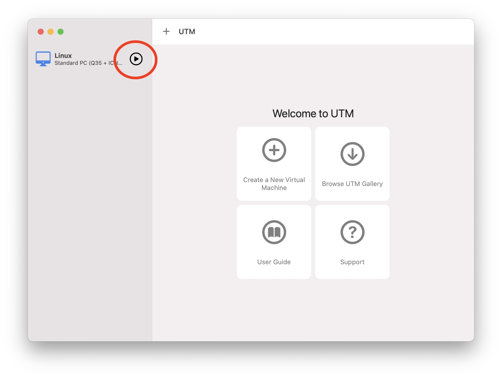

Run a Linux VM on your local machine using UTM
If Virtual box does not work for you (e.g. if you have a new mac with an M1 processor), then you will need to use a different virtualisation software. We will be using UTM for this. Click this link to download a dmg file. Once the file has downloaded open it and drag the UTM application to the applications folder.
Open up the UTM app from your list of applications (you might be prompted with a security warning, just click "open"). Once the app is open click on "Create a New Virtual Machine" and perform the following steps:
1. Name the machine "Linux"
2. Go to the "System" tab and move the "Memory" slides up to 4096 MB.
3. Click on "Advanced options" and uncheck "UEFI Boot".
4. Go to the "Drives" tab click on "Import Drive". Then select the qcow2 image you previously downloaded.
5. Go to the "Display" tab and change the "Emulated Display Card" value to "virtio-vga".
6. Click save and then click the play icon next to the newly create virtual machine.
